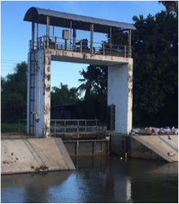

2.1 แนวคิดและหลักการการใช้พื้นที่ลุ่มต่ำปี 2560
เนื่องด้วยปัญหาการระบายน้ำของลุ่มน้ำเจ้าพระยา ซึ่งใช้แม่น้ำเจ้าพระยาเป็นแม่น้ำสายหลักในการระบายน้ำ หากเกินความจุลำน้ำจะทำให้เกิดความเสียหายในหลาย ๆ จุด และหากมีปริมาณน้ำจำนวนมากเข้าสู่พื้นที่ตอนล่างลุ่มน้ำเจ้าพระยาก่อนที่ไหลลงสู่อ่าวไทยนั้นเป็นพื้นที่เศรษฐกิจของประเทศ จึงจำเป็นต้องมีการตัดยอดน้ำก่อนเข้าสู่พื้นที่ดังกล่าว พื้นที่ทุ่งโพธิ์พระยาเป็นพื้นที่ลุ่มต่ำที่สามารถรับน้ำจากแม่น้ำเจ้าพระยา ผ่านแม่น้ำท่าจีนเข้าสู่โครงการได้จึงกำหนดให้ทุ่งโพธิ์พระยาเป็น 1 ในทุ่งรับน้ำจำนวน 12 ทุ่งรับน้ำตอนล่างของลุ่มน้ำเจ้าพระยา
2.2 การเตรียมความพร้อมของแต่ละทุ่ง
2.2.1 การสำรวจอาคาร เตรียมความพร้อมใช้งาน
โครงการส่งน้ำและบำรุงรักษาโพธิ์พระยาได้มีการสำรวจความพร้อมใช้งานของอาคารชลประทานต่าง ๆ ในปีงบประมาณ 2560 โดยสรุปดังนี้
| |
| |
| |
| |
|
2.2.2 การประชาสัมพันธ์
โครงการส่งน้ำและบำรุงรักษาโพธิ์พระยา ได้จัดประชุมสร้างการรับรู้ความเข้าใจการรับน้ำเข้า-ออกจากทุ่งและการทำนาปรังปี 2560/2561 ตามสถานที่ต่าง ๆ ดังนี้
 | |
 |  |
 |  |
 | |
 | |
 | |
 |
2.3 หลักการประเมินน้ำในทุ่งรับน้ำ
เนื่องจากทุ่งรับน้ำในลุ่มน้ำเจ้าพระยาตอนล่าง โดยเฉพาะทุ่งโพธิ์พระยา มีลักษณะเป็นทุ่งราบ โดยส่วนใหญ่จะใช้ในการทำกิจกรรมการเพาะปลูกข้าว การประเมินศักยภาพของการรับน้ำ ที่จำเป็นต้องมีการหาปริมาณน้ำนองที่อยู่ในทุ่งรับน้ำนั้นจะต้องอาศัยการคำนวณอย่างละเอียด และจำเป็นต้องพึ่งการสำรวจโดยละเอียดเช่นกัน การที่เป็นทุ่งราบนั้น กรณีระดับน้ำมีความแตกต่างกันไม่มาก แต่ปริมาณน้ำมีค่าเพิ่มขึ้นอย่างมาก การสำรวจระดับความสูงของทุ่งจึงต้องมีความละเอียดอย่างน้อย 5 เซนติเมตร ซึ่งที่ผ่านมาไม่มีการสำรวจในระดับนี้
อย่างไรก็ตามโครงการส่งน้ำและบำรุงรักษาโพธิ์พระยาจึงได้เสนอวิธีประเมินปริมาณน้ำในทุ่งดังนี้
2.3.1 จุดวัดระดับน้ำ โครงการส่งน้ำและบำรุงรักษาโพธิ์พระยากำหนดจุดวัดปริมาณน้ำ ตามจุดต่าง ๆ 5 จุด คือ
| ลำดับ | จุดวัดน้ำ | E | N | รายละเอียด |
|---|---|---|---|---|
| 1 | บ้านดอนขาด ม.3 | 609737.39 | 1583487.27 | |
| 2 | บ้านคลองขุด ม.4 | 613623.17 | 1582183.39 | |
| 3 | ปตร.ป่าพฤกษ์ | 623938.00 | 1582358.00 |  |
| 4 | ปตร.บางแม่หม้าย | 622100.00 | 1580455.00 | |
| 5 | ปตร.บางใหญ่ | 623302.00 | 1587623.00 |
2.3.2 การประเมินโค้งความจุของทุ่งรับน้ำ เมื่อกำหนดจุดวัดระดับน้ำแล้ว การประเมินโค้งความจุ โดยแบ่งเป็นระดับความลึกต่าง ๆ นั้น ในช่วงระดับความสูง 0.00 เมตร ถึงระดับความสูง 0.75 เมตร จะประเมินว่ามีน้ำท่วมโดยกินพื้นที่เพิ่มขึ้นเรื่อย ๆ ส่วนระดับความสูงมากกว่า 0.75 นั้น จะให้มีพื้นที่น้ำท่วมเท่าเดิม เนื่องจากพื้นที่น้ำท่วมแต่ละจุดนั้นเริ่มเต็มพื้นที่แล้ว ดังนี้
จากกราฟ เป็นความสัมพันธ์ระหว่าง ความจุน้ำ-ระดับน้ำ ในทุ่งรับน้ำโพธิ์พระยา โดยที่ระดับน้ำนั้นจะใช้ผลการวัดน้ำ 5 จุดตามข้อ 2.3.2
2.4 แผนและผลการรับน้ำเข้าทุ่ง
ปฏิทินการเพาะปลูกเริ่มเพาะปลูกต้ังแต่เดือนพฤษภาคม และเก็บเก่ียวแล้วเสร็จก่อนช่วงเดือนกันยายน ซึ่งเป็นช่วงที่มีน้ำหลาก เพื่อเตรียมพื้นท่ีรับปริมาณน้ําหลากจากแม่น้ําสายหลัก ลุ่มน้ําสาขา และปริมาณฝนตกในพ้ืนท่ี และให้สามารถนำปริมาณน้ำส่วนหนึ่งระบายออกจากแม่น้ำเจ้าพระยาผ่านแม่น้ำท่าจีน สำหรับควบคุมปริมาณน้ําในแม่น้ําเจ้ําพระยาไม่ให้เกิดผลกระทบในพื้นท่ีด้านท้าย ทั้งน้ีควบคุมระดับน้ําในพื้นท่ีลุ่ม ต่ําทุ่งโพธิ์พระยาจะต้องไม่ให้กระทบต่อ การดําเนินชีวิตประจําวัน และการสัญจรของราษฎรในพ้ืนที่
[การประเมิน น้ำในแม่น้ำเจ้าพระยาในช่วงเวลาต่าง ๆ]
แผนรับน้ำเข้าทุ่งลุ่มน้ำเจ้าพระยาตอนล่าง (พื้นที่ตั้งแต่จังหวัดนครสวรรค์ลงไป) เริ่มรับน้ำเข้าทุ่งตั้งแต่วันที่ 25 กันยายน 2560 รับน้ำเข้าทุ่งผ่านระบบชลประทานฝั่งซ้ายและฝั่งขวา และระบายน้ำที่เหลือผ่านท้ายเขื่อนเจ้าพระยา โดยมีกระบวนการสร้างการรับรู้และยินยอมจากประชาชนในพื้นที่ ตลอดจนจังหวัดให้ความเห็นชอบ มีเส้นทางรับน้ำเข้าทุ่ง จำนวน 12 ทุ่ง ดังแสดงในตาราง
ทุ่งโพธิ์พระยาเป็นทุ่งลุ่มต่ำที่มีขอบเขตทั้งหมดอยู่ในเขตโครงการส่งน้ำและบำรุงรักษาโพธิ์พระยา มีพื้นที่รับน้ำทั้งหมด 167,351 ไร่ จากการประเมินความสามารถในการรองรับน้ำเบื้องต้น โดยโครงการส่งน้ำและบำรุงรักษาโพธิ์พระยา กรณีที่ไม่มีน้ำนองอยู่ในโครงการเลย ประมาณ 160 ล้านลบ.ม. โดยคิดเป็นความลึกน้ำเฉลี่ย 0.70 เมตร การรับน้ำจะรับน้ำผ่านแม่น้ำท่าจีน ดังรูป
จากรูปการรับน้ำเข้าสู่ทุ่งจะใช้คลองส่งน้ำสายใหญ่ 1 ขวา ในการรับน้ำเข้าสู่พื้นที่ แต่ในขั้นตอนปฏิบัติโครงการส่งน้ำและบำรุงรักษาโพธิ์พระยาก็จะใช้อาคารชลประทานต่าง ๆ และคลองส่งน้ำที่มีอยู่ทั้งหมดรับน้ำจากแม่น้ำท่าจีน ตามสถานการณ์ อย่างไรก็ตาม นอกเหนือจากปริมาณน้ำที่รับมาจากแม่น้ำท่าจีนแล้ว ก็จะมีปริมาณน้ำจากแหล่งอื่น ๆ อีก คือ น้ำที่ระบายจากโครงการส่งน้ำและบำรุงรักษาสามชุก ผ่านคลองระบายใหญ่ สามชุก1 และคลองระบาย 2 ซ้ายสองพี่น้อง เข้าสู่คลองระบายใหญ่สองพี่น้อง และปริมาณน้ำอีกส่วนก็จะมาจากโครงการส่งน้ำและบำรุงรักษาสองพี่น้อง รวมถึงโครงการส่งน้ำและบำรุงรักษาบางเลน ผ่านปตร.บางยี่แส และ ฝายยางจรเข้สามพัน ส่วนพื้นที่รับน้ำที่อยู่ฝั่งซ้ายของแม่น้ำท่าจีน ก็จะมีน้ำที่หลากมาจากโครงการส่งน้ำและบำรุงรักษาชัณสูตร และโครงการส่งน้ำและบำรุงรักษาผักไห่ ผ่านคลองระบายใหญ่สุพรรณ 3 และคลองระบายใหญ่สุพรรณ 4 ด้วย ทั้งนี้พบว่าในช่วงที่มีการรับน้ำก็จะมีปริมาณน้ำส่วนหนึ่งที่มาจากฝนตกในพื้นที่ด้วย ดังรูป
ผลการรับน้ำของโครงการส่งน้ำและบำรุงรักษาโพธิ์พระยานั้นจะดูจากปริมาณน้ำที่อยู่ในทุ่งเป็นสำคัญ ซึ่งการที่จะรับทราบว่าปริมาณน้ำที่อยู่ในทุ่งมีปริมาณมากเท่าไหร่นั้น มีความยากเนื่องจากตัวแปรปริมาณน้ำฝนที่ตกลงพื้นที่นั้นคาดหมายได้ยาก ดังนั้นโครงการส่งน้ำและบำรุงรักษาโพธิ์พระยาจึงได้มีการตรวจสอบ ปริมาณน้ำที่ผ่านเข้า-ออก จากปตร.และทรบ. ที่สำคัญ ๆ ตลอดเวลา และได้สอบเทียบร่วมกับการวัดระดับน้ำที่อยู่ในทุ่งและคลองระบายน้ำ โดยใช้หลักการประเมินน้ำในทุ่งรับน้ำ ตามที่กล่าวไว้ในหัวข้อ 2.3 สำหรับผลการรับน้ำตามช่วงเวลานั้น แสดงได้ดังนี้
จากตารางที่ [] (1) แสดงวันที่รับน้ำ
(2) คือ ปริมาณน้ำ (surplus) ในแต่ละวัน หน่วย ล้านลูกบากศ์เมตร= Inflow - Outflow
Inflow คือ ปริมาณน้ำท่าที่ไหลเข้าทุ่ง ประเมินจากปตร. และทรบ.ที่สำคัญต่าง ๆ + ปริมาณฝนตกในพื้นที่
Outflow คือ ปริมาณน้ำที่ระบายออกจากทุ่ง ประเมินจากปตร.และทรบ.ที่สำคัญต่าง ๆ
(3) คือ ปริมาณน้ำในทุ่ง หน่วยล้านลูกบากศ์เมตร
ในช่วงที่มีแผนการรับน้ำ เดิมได้กำหนดเวลาการรับน้ำไว้ 30 วัน เนื่องจากประเมินศักยภาพความจุในการรับน้ำที่ 160 ล้านลบ.ม. ร่วมกับปริมาณน้ำที่เข้ามาในแต่ละวัน ตามตารางที่ [] อย่างไรก็ตามความจุ 160 ล้านลบ.ม. เดิมที่ได้วางแผนไว้เป็นความจุที่ประเมินไว้ตามการคาดการณ์ โครงการส่งน้ำและบำรุงรักษาได้ทำการปรับความจุใหม่ โดยใช้สถานการณ์ ณ วันที่ 15 ตุลาคม 2560 ซึ่งเป็นช่วงเวลา ที่น้ำมีการท่วมขังเป็นบริเวณกว้าง และมีความลึกของน้ำในทุ่งโดยเฉลี่ย ประมาณ 70 เซนติเมตร คิดเป็น 106 ล้านลบ.ม.โดยประมาณ ซึ่งหากเกินจากนี้จะทำให้การระบายน้ำออกให้ได้ทันเวลากำหนดเริ่มทำการเพาะปลูกทำได้ยาก และส่งผลกระทบคือ พื้นที่ที่จะได้รับผลกระทบจะมีมากขึ้น เกษตรกรได้รับความเดือดร้อนจากการที่มีน้ำท่วมขังในระดับสูง เกินกว่าระดับที่เคยเกิดในปีปกติที่ผ่านมา ร่วมถึงทางสัญจรในพื้นที่ ระดับน้ำใกล้เคียงกับระดับถนน และมีบางช่วงถนนที่มีระดับถนนต่ำจำเป็นต้องนำกระสอบทรายมาเตรียมการและป้องกันน้ำไว้
จากรูป จะเห็นได้ว่า ปริมาณน้ำในทุ่งยังคงสูงขึ้นเรื่อย ๆ เกินกว่าความจุที่ทางโครงการส่งน้ำและบำรุงรักษาโพธิ์พระยาได้กำหนดแล้ว แต่เพื่อเป็นการบรรเทาอุทกภัยที่อาจเกิดขึ้นด้านท้ายแม่น้ำเจ้าพระยา ซึ่งได้กำหนดการรับน้ำไว้ 30 วัน สิ้นสุดวันที่ 31 ตุลาคม 2560 จึงยังคงเปิดการรับน้ำไว้ตามนโยบาย ทั้งนี้การที่จะระบายน้ำออกในช่วงเวลาที่เกินความจุแล้ว ยังทำไม่ได้มากเท่าที่ควรเนื่องจากระดับน้ำหน้าประตูระบายน้ำที่สำคัญ ๆ ยังคง ต่ำกว่าระดับน้ำในแม่น้ำท่าจีน
2.5 แผนและผลการระบายน้ำออกจากทุ่ง
กรมชลประทานวางแผนทยอยระบายน้ำออกจากทุ่ง พื้นที่ลุ่มต่ำลุ่มน้ำเจ้าพระยา จำนวน 13 ทุ่ง ตั้งแต่วันที่ 1 พฤศจิกายน 2560 ถึงต้นเดือนมกราคม 2561 โดยคงเหลือน้ำในทุ่งไว้เพื่อเตรียมแปลง ทำให้เกษตรกรสามารถทำการเพาะปลูกพืชฤดูแล้งทันเวลาตามแผน และข้อตกลงที่ได้สร้างการรับรู้กับประชาชนในพื้นที่ของแต่ละทุ่งไว้ มีรายละเอียด ดังแสดงในตารางที่ []
เนื่องด้วยการระบายน้ำออกจากทุ่งจะมีการระบายน้ำ ผ่านคลองระบายใหญ่สองพี่น้อง